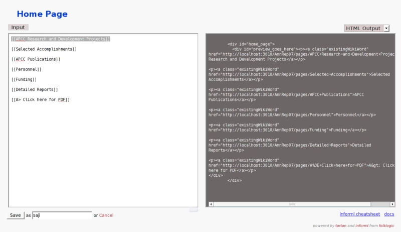

<< HTML_and_ConTeXt | HTML_to_ConTeXt >
In this example, we created new pages for chapters and sections so that each part of the document could
be authored by a different person. In Informl new pages are indicated by the CSS class name "existingWikiWord"
as shown in the following figure.
.
{kind=link}
<p>
<a class="existingWikiWord"
href="http://localhost:3010/AnnRep07/pages/APCC+Research+and+Development+Projects">
APCC Research and Development Projects
</a>
</p>
Knowing this, I have used the following 'hpricot' code to click on chapter and section links to retrieve their contents.
chapters= (doc/"p/a.existingWikiWord")
# we need to navigate one more level into the web page
# let us discover the links for that
chapters.each do |ch|
chap_link = ch.attributes['href']
# using inner_html we can create subdirectories
chap_name = ch.inner_html.gsub(/\s*/,"")
chap_name_org = ch.inner_html
# We create chapter directories
system("mkdir -p #{chap_name}")
fil.write "\\input #{chap_name} \n"
chapFil="#{chap_name}.tex"
`rm #{chapFil}`
cFil=File.new(chapFil,"a")
cFil.write "\\chapter{ #{chap_name_org} } \n"
# We navigate to sections now
doc2=Hpricot(open(chap_link))
sections= (doc2/"p/a.existingWikiWord")
sections.each do |sc|
sec_link = sc.attributes['href']
sec_name = sc.inner_html.gsub(/\s*/,"")
secFil="#{chap_name}/#{sec_name}.tex"
`rm #{secFil}`
sFil=File.new(secFil,"a")
sechFil="#{chap_name}/#{sec_name}.html"
`rm #{sechFil}`
shFil=File.new(sechFil,"a")
After navigating to sections (h1 elements in HTML) retrieve their contents and send it to the ruby function "scrape_page.rb" for filtering.
# scrape_the_page(sec_link,"#{chap_name}/#{sec_name}")
scrape_the_page(sec_link,sFil,shFil)
cFil.write "\\input #{chap_name}/#{sec_name} \n"
end
end
fil.write "\\stoptext \n"